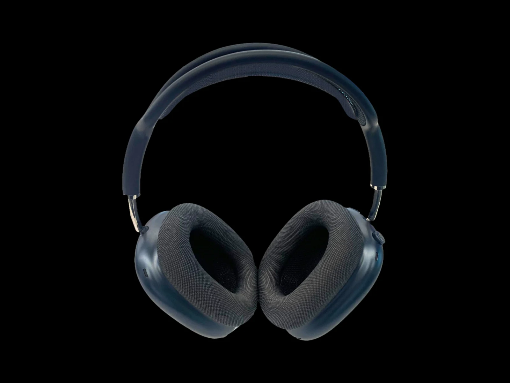
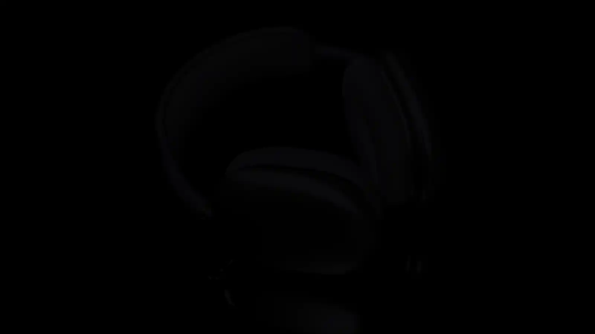
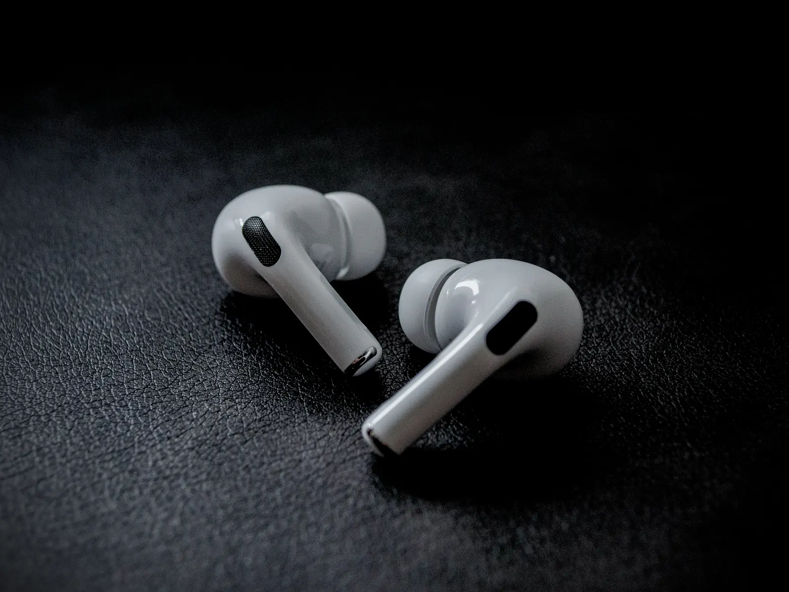
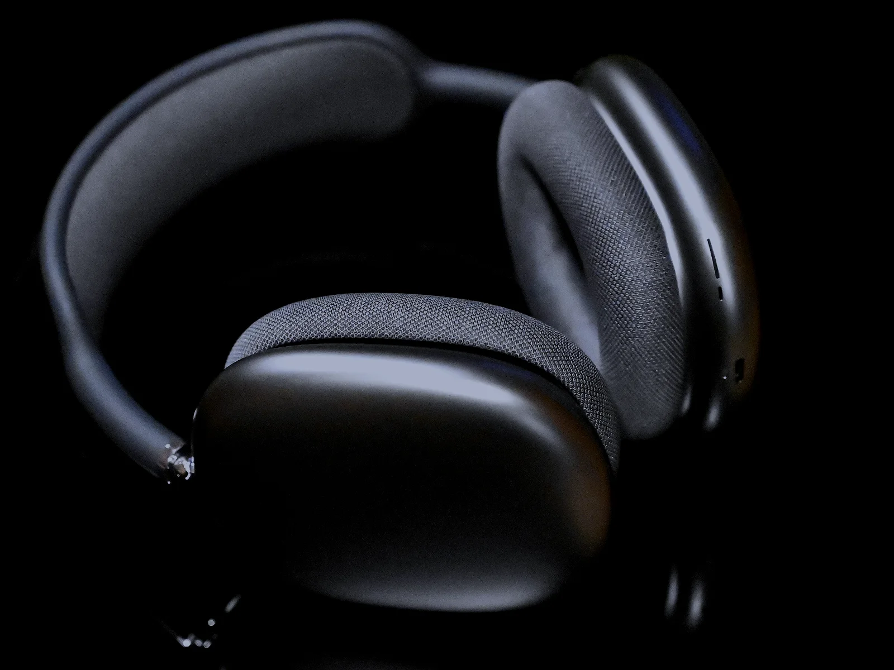
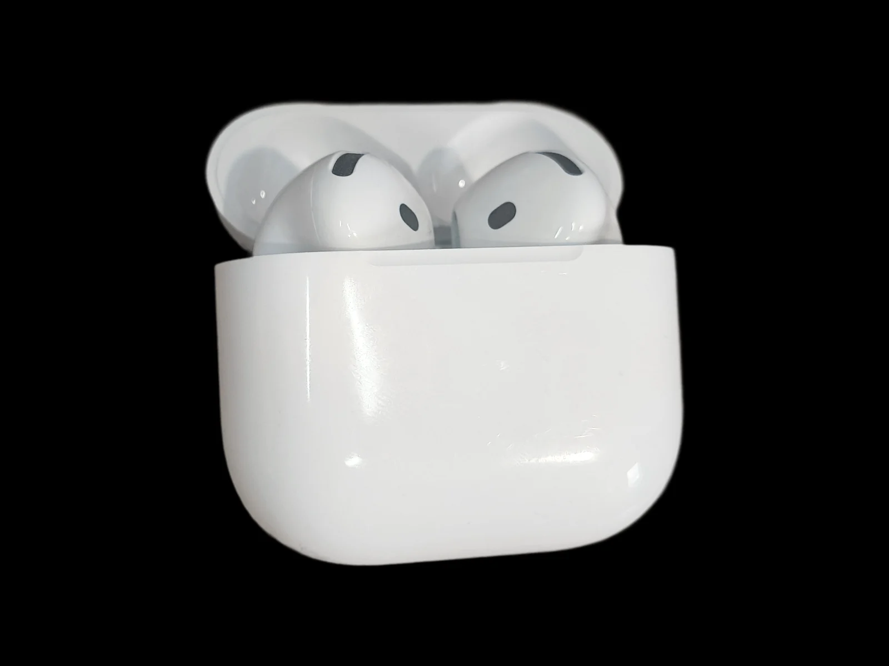
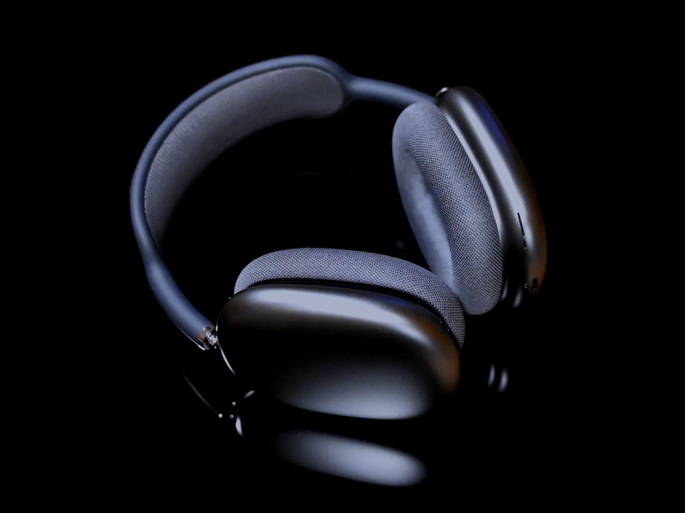
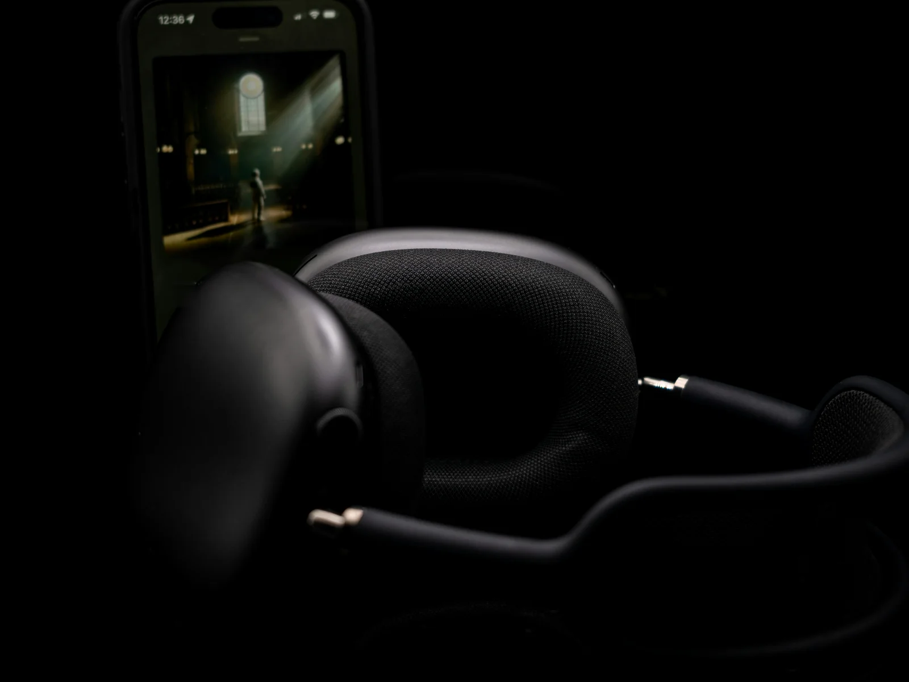
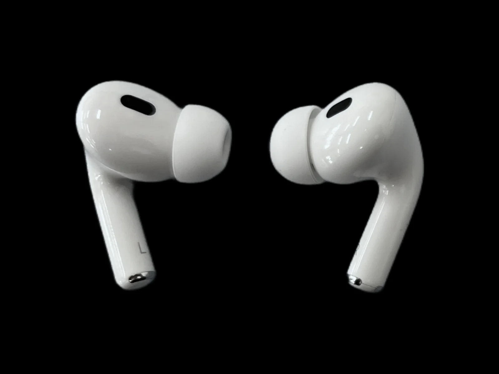

Funda Smart Case
Los guarda. Y los pone a dormir.
Al meter los auraPods Max 2 en su funda pasan a un modo de reposo que apenas gasta batería.


Gama auraPods
Tres auraPods con el chip AURA H2: unos de diadema para perderte en la música, unos Pro que también miden tu pulso y los auraPods 5, ahora con cancelación activa de ruido.
auraPods Max 2
Nueve micrófonos y el chip AURA H2 apagan el ruido de fuera con más fuerza que la generación anterior. El metro, la oficina o el avión se quedan al otro lado.
Con el cable USB-C, audio sin pérdida y latencia ultrabaja. Y hasta 20 horas con la cancelación de ruido activada.
Conocer los auraPods Max 2La gama / 2026
Tres auraPods con el chip AURA H2: los Max 2 de diadema, los Pro 3 con sensor de frecuencia cardiaca y los auraPods 5, ahora con cancelación de ruido.
Cancelación activa de ruido
Los micrófonos escuchan lo que pasa a tu alrededor y el chip AURA H2 lo contrarresta miles de veces por segundo. Cuando necesitas oír el mundo, el modo Ambiente lo deja pasar con naturalidad; y si empiezas a hablar con alguien, la detección de conversación baja la música sola1.

Audio espacial personalizado
Tus auraPods colocan cada instrumento a tu alrededor, como en la sala, y ajustan la escena a la forma de tus orejas. Gira la cabeza y el escenario se queda en su sitio.
Las películas y los conciertos suenan delante de ti aunque te muevas.
Mezcla la cancelación de ruido y el modo Ambiente según lo que pasa a tu alrededor.
En los auraPods Max 2, con el cable: cada detalle de la grabación y una latencia ultrabaja para jugar o crear.

Salud
Los auraPods Pro 3 llevan la salud al oído: miden tu pulso mientras entrenas y protegen tu audición todos los días2.
Un sensor en cada auricular sigue tu pulso al correr, en el gimnasio o en clase de ciclo, sin necesidad de reloj.
Baja los ruidos fuertes del entorno, como una obra o un concierto, sin dejar de oír lo que importa.
En unos cinco minutos, desde tu auraPhone, con un resultado claro que puedes guardar.
Ajusta voces y sonidos a tu perfil de audición si tienes una pérdida leve o moderada.
Autonomía
Lo que dura cada modelo con la cancelación de ruido activada. Y cuando se agotan, el estuche los recarga varias veces más3.
Diseño / Acabados
Los auraPods Max 2, en aluminio anodizado medianoche, blanco estrella, azul, púrpura y naranja, con la diadema de malla trenzada a juego.

Estuche de carga
El estuche de los auraPods Pro 3 carga con MagSafe o USB-C, tiene altavoz y un enganche para la correa, y aparece en el mapa con la búsqueda de precisión cuando se esconde entre los cojines.

auraPods Max 2
Orejeras de aluminio anodizado, una diadema de malla trenzada que reparte el peso y almohadillas de espuma viscoelástica que se adaptan a ti. La Digital Crown sube el volumen y el botón de control de ruido cambia de modo con un toque.
Hasta
20 h
con la cancelación de ruido activada
Con
9
micrófonos para el ruido y las llamadas

auraPods + auraPhone + auraBook
Acerca los auraPods a tu auraPhone y se emparejan con un toque. A partir de ahí, saltan solos al auraPad o al auraBook cuando empiezas a ver algo allí4.
De la llamada en el auraPhone a la película en el auraBook, sin volver a emparejar.
Escucha en tu idioma lo que te dicen en otro, en los auraPods Pro 3 y los auraPods 5.
Mira dónde los dejaste y haz que suenen desde cualquier dispositivo AURA.

Accesorios
Una funda que protege y ahorra batería, y almohadillas para que los Pro te queden como hechos a molde.
Funda Smart Case
Al meter los auraPods Max 2 en su funda pasan a un modo de reposo que apenas gasta batería.

Almohadillas
Los auraPods Pro 3 vienen con las cinco, y la prueba de ajuste te dice cuál sella mejor tu oído.

Comparativa técnica
El mismo chip AURA H2 en los tres. Cambian la forma, la autonomía y lo que miden.
AURA Store